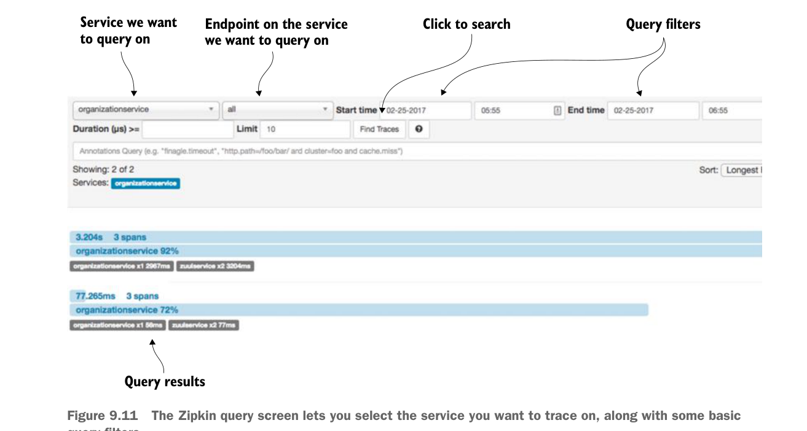

chỉ gọi tới một cơ sở dữ liệu duy nhất. Bạn sẽ dùng POSTMAN để gửi hai lời gọi tới dịch vụ organization (GET http://localhost:5555/api/organization/v1/organizations/e254f8c-c442-4ebe-a82a-e2fc1d1ff78a).
Các lời gọi tới dịch vụ organization sẽ đi qua Zuul API gateway trước khi được định tuyến xuống một instance dịch vụ organization.
Sau khi bạn đã thực hiện hai lời gọi tới dịch vụ organization, hãy truy cập http://localhost:9411 và xem Zipkin đã ghi nhận gì cho kết quả trace. Chọn “organization service” trong hộp dropdown ở góc trên cùng bên trái màn hình rồi nhấn nút Find traces. Hình 9.11 cho thấy màn hình truy vấn Zipkin sau khi bạn thực hiện các thao tác này.

Màn hình truy vấn Zipkin cho phép bạn chọn dịch vụ muốn theo dõi, cùng với một số bộ lọc truy vấn cơ bản.
Giờ nếu bạn nhìn vào ảnh chụp màn hình trong hình 9.11, bạn sẽ thấy Zipkin đã ghi nhận hai giao dịch. Mỗi giao dịch được chia thành một hoặc nhiều span. Trong Zipkin, span đại diện cho một dịch vụ hoặc lời gọi cụ thể mà thông tin thời gian đang được ghi nhận. Mỗi giao dịch trong hình 9.11 có ba span được ghi nhận: hai span trong Zuul gateway, rồi một span cho dịch vụ organization. Hãy nhớ, Zuul gateway không chuyển tiếp một lời gọi HTTP một cách mù quáng. Nó nhận lời gọi HTTP đến, kết thúc lời gọi đến đó, rồi tạo một lời gọi mới ra tới dịch vụ đích (trong trường hợp này là dịch vụ organization). Việc kết thúc lời gọi ban đầu này là cách Zuul có thể thêm pre-, response và post filter vào mỗi lời gọi đi vào gateway. Đó cũng là lý do chúng ta thấy hai span trong dịch vụ Zuul.